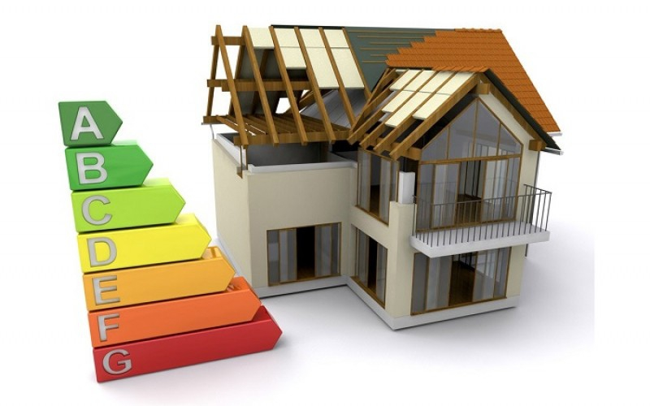
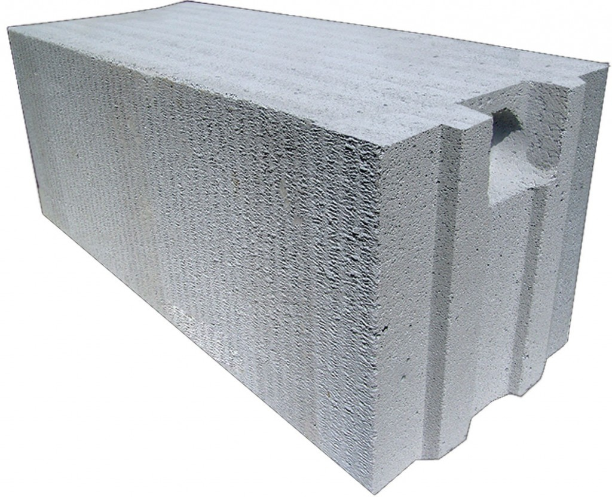
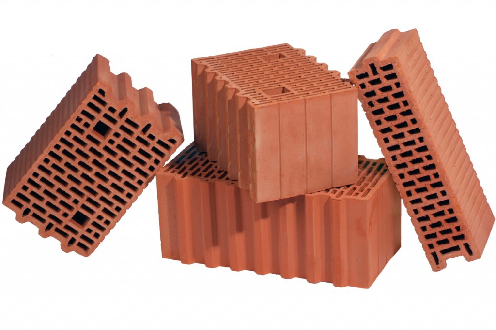
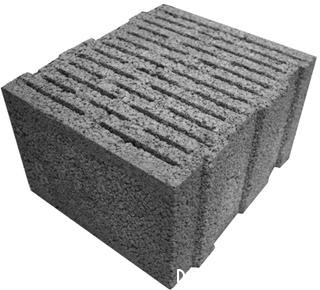

How to choose walls material
Everyone has his own dream house. In my dreams for many years lived a small cozy house, Without any special architectural delicacies, but necessarily very warm.
The opportunity to realize the dream appeared only after fifty - the age when it already follows Think about life in retirement and relate fantasies to reality. Today's reality Makes us very responsible and very rational.
If you want heat in the house - think about how to get it, how to save it. Needs with opportunities. Consider the costs to build as cheap as possible, but at the same time Not "fly into the pipe" when you have to pay for energy in full.
Aerated concrete
T
It is established that at higher humidity and negative temperatures, water in the pores Material freezes, there is a sharp loss of heat-shielding properties. This also means, That at transitions of temperature through zero there is a rapid exhaustion of the resource Frost resistance, which in turn leads to loss of durability.
This, as experts say, happened in the collapsing houses mentioned above. The non-dried material was plastered, moisture was trapped inside the structures and made Its own.
The thermophysical characteristics of the masonry are also significantly influenced by the far from ideal Geometry of cellular blocks. In the places of defects additional cold bridges are formed.
And yet, cellular concrete, as before, is the cheapest.
Ceramic porous
Large-format ceramic porous blocks Are positioned as one of the most modern and promising wall materials. Manufacturers emphasize its environmental friendliness and manufacturability. Low Thermal conductivity in the list of advantages is not placed in the first place.
The coefficient of thermal conductivity of porous ceramics in a dry state is, indeed, not the most High - 0.180 W / m * K. The capillary structure of the material provides good moisture exchange, Rapid drying, favorable microclimate. At the same time, when building walls It is recommended to cover the unfinished masonry from the slit blocks in order to avoid in the event of rain Filling the existing voids with water.
Mounting the insulation layer on facades of porous ceramics is not considered simple due to Brittleness of the material. In addition, a violation of the integrity of the structure of the stone leads to a decrease Heat-shielding properties of walls.
The relatively high price of a material is justified by its high load-bearing capacity, Strength and durability. He is closest to all the properties of the usual "red" brick, his Lovers of classical solutions. I am open to innovation and intend to build The warmest house.
Ceramsite concrete
The clay itself as a heat-insulating material Known for a long time. And already more than ten years ago on its basis in Belarus they began to produce Large-format wall blocks. Manufacturers emphasize high energy efficiency Material, good soundproofing properties, high frost resistance and moisture resistance, Increased comfort and durability.
By its ecological compatibility it is compared with ceramic bricks and even with wood (claydite is obtained By firing conventional clay at a temperature of 1150 ° C without using any chemical Additives).
To improve the thermal properties of the blocks are made hollow. Paso-crestal system Allows to refuse at laying from use on vertical seams of cement-sandy Solution or adhesive composition. The sorption moisture of the material does not exceed 4% and Practically does not affect the thermal conductivity of structures.
The difference in thermal conductivity of claydite-concrete blocks from different manufacturers So great that there was a desire to find out why.
Thus, "Minskzhezobeton", for example, for its blocks with a width of 400 mm indicates - 0.180 W / m * K, And "Claydite Gravel Plant, Novolukoml" declares the coefficient of thermal conductivity for Masonry (average heat conductivity for finished structures, taking into account joints Is always somewhat worse than the material itself) - 0.118 W / m * K.
The composition and technology are almost the same, moreover, in Minsk they use Novolukomlsky Expanded clay filler. What is the difference? We study the description, it turns out that the whole thing is Block construction. In Minsk - seven rows of slots, in Novolukomlsk - thirteen. Additional air layers, as is known, significantly increase the thermal resistance. So, according to the test reports, the resistance to the heat transfer of the fragment Walls with allowance for heat losses at the seams and in operating conditions B from the Novolukomlsk Claydite-concrete blocks with a width of 400 mm (single-row masonry, thirteen rows of air Gaps) is 3,718 m 2 • o C / W, and the fragment of the wall of blocks of width 300 mm plus 200 mm (double-row masonry, fourteen rows of air gaps) - already 4.26 m 2 • o C / W.
At a price keramzitobeton, of course, is more expensive than cellular blocks. However, in order to achieve the same The thermal efficiency of the masonry requires a large thickness. Hence, from one Cubic meter of claydite concrete, the wall of a larger area is obtained, and hence the difference in price Is decreasing.
Conclusions
All three materials on the claimed thermophysical characteristics are close enough and suitable For the construction of a warm house, but with a wall thickness of up to 500 mm with resistance Heat transfer not less than 4.0 m 2 • o C / W in all cases except Keramzit-concrete blocks of the Novolukoml plant of expanded clay gravel, can not do without Insulation. Almost always marketers emphasize the advantages of each, often silent About the shortcomings.
The price of the material should not be regarded as an absolute value. In each case A binding is necessary at least to thermal efficiency. You can also take into account technological Costs - productivity when laying, the cost of recommended materials, the cost of Insulation and so on. - it will be even more correct comparison.
Selecting cellular concrete, you should consider how to ensure the required humidity. Specialists Recommend drying the blocks before the beginning of the masonry, which is almost impossible. Either 3-5 years of living in a non-plastered house in anticipation of drying out, which does not seem very Healthy.
Keramzit concrete is different - thirteen-slit blocks with a width of 400 mm in the Novolukomlsk plant Expanded clay gravel significantly differ from analogues in thermal physics. Online Manufacturer in confirmation of all characteristics - references to test reports. All Fairly transparent, I want to believe. The manufacturer recommends to plaster Walls on both sides, especially under hanging facades. This, of course, additional costs, but, Perhaps it's worth it. Perhaps, it is worth spending time on a more detailed study of all the And against this particular material.

{kind=link}
{kind=link}
{kind=link}